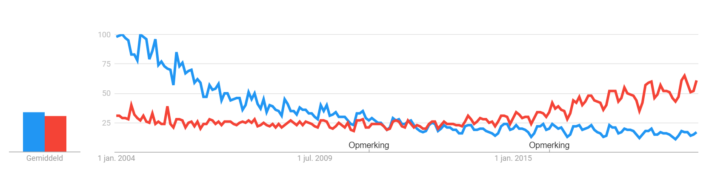

A report from the course DA377B
S01
The general techniques of Git and GitHub were know to me, I had never worked with GitHub Pages before. I had also never fokrked a repository before. I have worked on repositories with other people and by myself before, but never used the forking functionality, always just branching. I have never worked with Markdown. I have never attached tags to any commit before.
I have created several small websites using html and css. These were mostly to support programming with php.
I have created several small web applications. I have worked with php using things like loops and statements, nothing advanced. I have a little experience with inserting javascript code into html documents, but this knowledge is very limited. I have also used Java Servlets before to create web applications. I have also created a system using a REST architecture before.
I learned to set up the GitHub Pages functionality. I also learned that an html page called index.html will be displayed if a folder is targeted that contains that html page. I learned to attach tags to commit to disply the release version of that commit.
S02
I have some experience with html and css. I have made several website using html and an occasional one using css, although my css knowledge is very little. I have used JavaScipt once before and only in a single case. My JavaScript knowledge is absolutely minimal.
According to MDN one can state that HTML defines the meaning and structure of web content. It is used to determine the nature of different elements on a page and for a part how they are displayed. CSS defines the way elements are displayed and presented. It changes the rules of how to display the page. These rules can be used all over the page, it is not necessary to change things everwhere it is used. JavaScript describes the behaviour of web content. It can be used to make a page do things. It can also be used outside of web development.
The browser sends an HTTP request to the web server for a specific page. The browser then returns an HTTP response which may contain the requested page in an HTML format for example.
I learned some syntaxes for html (such as linking the stylesheet). I also learned about some semantic elements in HTML (such as header and footer). Finally I learned some syntax of css and roughly how it will influence the html page it is linked to.
S03
I did not really have any previous experience with using javascript in separate files. I had used javascript a little bit by directly inserting it into an html file. Furthermore, this code was borrowed from someone else and I did not fully understand it yet.
JavaScript seems similar in basics to Java and php, regarding things like variables and such. In general it also seems pretty similar to Java, using objects with attributes and methods/functions and such.
I took the assignment simply step by step. I started with all the requirements for grade 3 and then worked on to the grade 5 requirements. One of the trickier parts for me was getting the JSON files locally at the very start. After that just taking it step by step worked fine.
I learned:
- How to set file preference in Chrome from XML to JSON
- How to work with JavaScript objects, including setting parameter
- How to create and specify transitions using CSS
- How to parse and use JSON data in JavaScript
- How to manipulate HTML elements using JavaScript
- How to use the fetch system to get data from different sources
- How to use some functions of canvas elements in HTML
- How to create a relatively dynamic object in HTML with the help of JavaScript
S04
I did not have any previous experience with programming tools like node and npm.
Node and Express seem to form a good framework to build larger and more interactive websites on. Node and Express are not easy to work with when you start out and need some practice to get working well. Things like getting the information in request headers takes some searching to find.
I did not have any notable plan for the coding assignment. My usual way of doing these takes a few steps. First, I start with reading the lecture notes. Then I read the articles suggested (the Node and Express articles in this cas). After that I start with the actual assignment. When I get stuck I try to refer to the lectures or articles and after that I will search the Internet.
I aimed for grade 5. The difference between the tasks for grade 4 and grade 5 was very small. The harder step was getting from grade 3to grade 4.
I learned:
- The basics of working with npm, Node and Express
- How to structure an express server using routers and middleware
- How to fetch query data from http requests in an express router
- How to add static webpages to an node/express server
S05
I appreciate PHP. It allows for very modular design with it's include function. I also like how it is really easy to work it into your HTML file, since it can basically be placed anywhere on the page.
PHP reminds me mostly of Python, as well as JavaScript a little. It feels very different from Java with declaring variables for example. The way it integrates in HTML is something I have not really seen before.
I took pretty much the same plan as in the last coding exercise. For this one, however, the lectures I found were only in Swedish and therefore not very helpful.
I (re-)learned:
- How to use PHP in its basic form, declaring variables and such
- How to split page into common parts and use those efficiently using PHP inclusion
- How to run PHP with the XAMPP package
- How to access the MySQL database in the XAMPP package
- How to access MySQL using PHP
- How to use URLs to pass data between PHP files
S06
I think having popular programming languages is tremendously important and beneficial. The fact that most programmers will know these languages allows for great amounts of collaboration. This in itself is a great boon to the world of software development. If it would be possible, bringing all programming languages together to a few that suit all needs would be ideal.
I am interested in programming languages for which I feel they suit the current need I have. In addition to this, I want the language to feel like I do not have to do things that feel unnecessary or redundant to make things work.
See my comparison below. It looks like C++ interest has slowly been going down since the start of the comparison. The decrease in interest has slowed down in the recent years. There is a passing point around 2012 where Python interest passed C++ interest, mostly because of the decrease of interest in C++.

Since there are so many languages that I do not have experience with, it is hard to recommend one fully. There is simply so much that I don't know that it would feel quite close-minded to already recommend something. However, if I had to choose at this very moment I would most likely recommend PHP for it's capabilities as a server side programming language for web development.
I don't feel I learned much in this section. The lectures were hard to follow by only reading since they are mostly key words. I suppose I have learned of the existence of a bunch of frameworks for JavaScript and PHP.
S08
Web Analysis
We made an analysis of performance of three different websites :
Facebook Amazon ISSUUMembers:
- Martin Jjooga
- Ibrahim Olakunle
- Kebrum Mulugheta
- Stephan Ngaha
Our findingsS09
Several different security issues and challenges around web application security has continued to attract attention as a result of increase in the number of hackers and attackers. To discuss a few among these web application menace according to OWASP Top 10 Vulnerabilities, are;
Broken authentication:
Is one major vulnerability that attackers have always exploit to gain access to individual or company users account due to negligence on the part of some users. The campaign for authentication protection and strong password for users has been a consistent effort in so many quarters in order to encourage system users to have a strong authentication method so as to protect their account or system from being attack. A web application can suffer broken authentication if the web application become vulnerable when; it allows automated attacks like credential stuffing, weak for brute force, using weak password recovery method, use weak encrypted method and so on.
Sensitive data exposure:
Is another widespread web application security challenge. A lot of system users both as individual or as organization have directly or indirectly, knowingly or unintentionally exposed their sensitive data some of which includes; credit card details, private credential, medical information, social security numbers etc., on web and this has given attackers the opportunity to manipulate peoples data and give rise to identity theft.
Broken access control:
This type of web application vulnerabilities is also a major concern and challenges to especially companies. For many years, some companies allow visitors to its website administrative panel and database through login page. This type of implementation approach has exposed many companies to danger and open up its storage to attacks.
"Essential guidelines to follow to create secure web applications":
There are certain measure that can be put in place to ensure web application security. Some few approaches are discussed below.
S09
Here is the text for this section.
S10
Here is the text for this section.